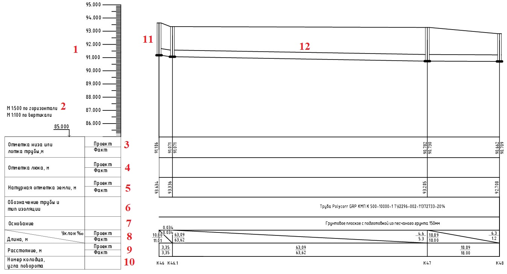

Тип основания и подготовки под уложенную трубу с указанием толщины слоя.
Тип, марка, диаметр и маркировка уложенной трубы
Натуральная отметка земли. Также указывается план и факт земли в месте монтажа колодца.
Отметка люка. Указывается только после капитальной установки люка на колодец.
Отметка низа или лотка трубы. При этом указываются проектная и фактическая отметка. Могут быть указаны 4 отметки, обычно это делают при составлении профиля канализации, когда входящая трубы выше выходящей.
Величины масштабов при выполнении схемы.
Высотная шкала. На ней указаны абсолютные отметки с запасом вверх и низ.
Колодец, где верхняя и нижняя граница отрисованы четко по указанным высотам на уровне своих высот на шкале.
Труба, указывается с учетом диаметра трубы, высота также должна соответствовать высоте на боковой шкале.
Нумерация колодцев в соответствии с проектом.
Расстояние между колодцами, указывается от центра до центра элемента. Над линией указаны проектные расстояния, снизу фактические.
Длина и уклон трубы. Над линией указаны проектные расстояния, снизу фактические.